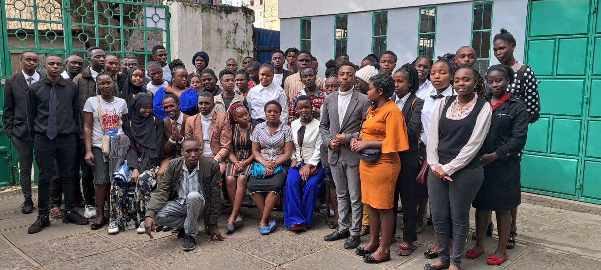
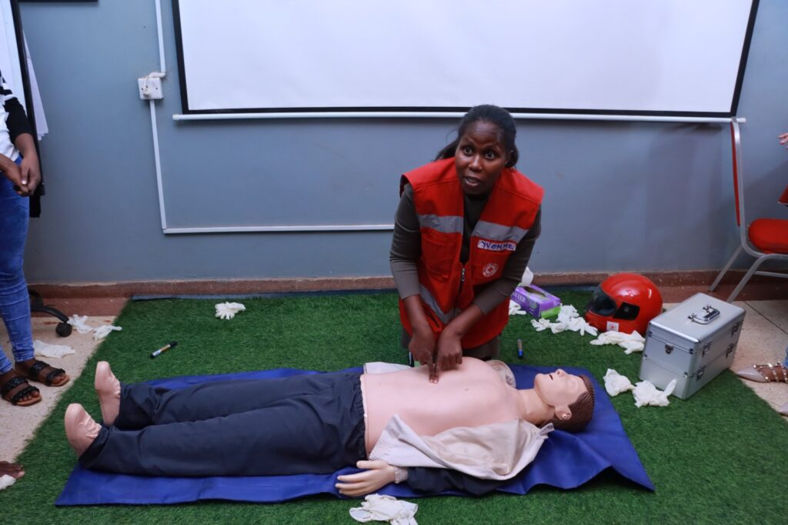
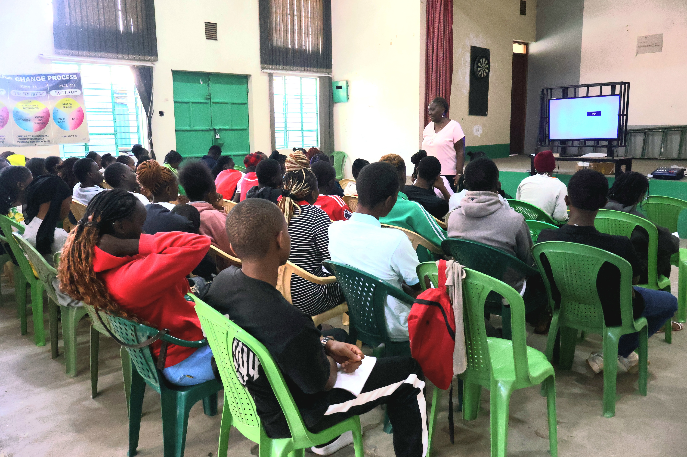
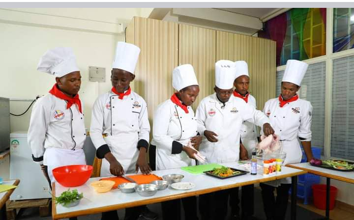
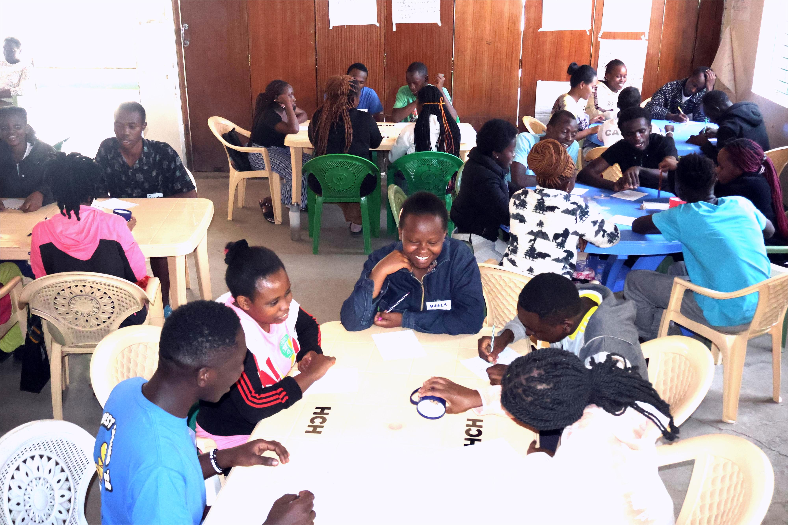
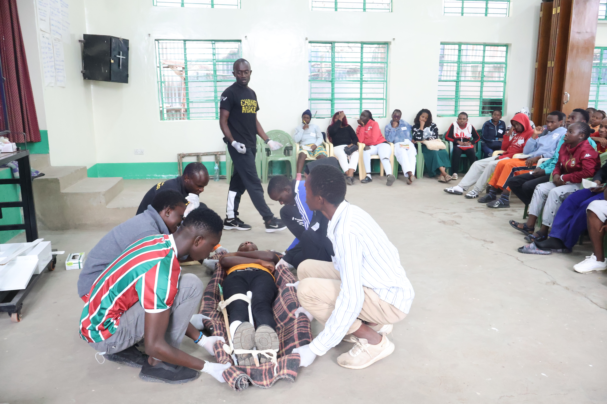

Essential
Life Skills Training
Comprehensive training in communication, problem-solving, financial literacy, and personal development.
See More
Transforming lives in Nairobi's underserved communities through vocational training, life skills mentorship, and spiritual guidance. Giving young adults the tools to build careers, confidence, and hope.
Empowering youth with practical skills for sustainable livelihoods and personal growth.
Comprehensive training in communication, problem-solving, financial literacy, and personal development.
See More
Certified emergency response training providing valuable skills for community safety and employment.
See More
Peer-to-peer spiritual guidance fostering hope, purpose, and positive community engagement.
See More
Technical skills training in various trades leading to sustainable employment and entrepreneurship.
See MoreHear from youth whose lives have been changed through our programs
This program gave me hope when I had none. The life skills training helped me secure my first job, and now I can support my family. It's more than education—it's a new beginning.
The first aid certification opened doors I never imagined. I now work as a safety officer at a construction company. The practical skills we learned are invaluable in the real world.
After dropping out of school, I felt lost. The youth evangelization program helped me find purpose and community. Now I mentor other young people facing similar challenges.
The financial literacy sessions changed how I manage money. I started a small tailoring business and now employ two other graduates. This program builds entrepreneurs, not just employees.
Capturing the journey of transformation, learning, and community.

Building relationships during breaks
Life skills training session

Practical emergency response skills

Our diverse youth community

Distributing donations to the community
Our mission is powered by collaboration with dedicated partners who believe in transforming youth lives
Your partnership creates lasting change in Korogocho, Huruma, Kariobangi, and Madoya communities